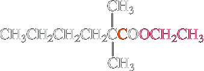
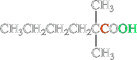

Fischer esterification
When a carboxylic acid and an alcohol are mixed together, no reaction takes place. However, upon addition of catalytic amounts of a mineral acid, such as sulfuric acid or HCl, the two components combine in an equilibrium process to give an ester and water. This method of ester formation was first described by the legendary German chemist Emil Fischer and his coworker Arthur Speier in 1895. It is therefore called Fischer-Speier or (more commonly) Fischer esterification:
| CH3COOH Acetic acid | + | CH3CH2OH Ethanol | H2SO4 ⇌ |  Ethyl ethanoate Ethyl ethanoate | + | H2O |
Esterification is not very exothermic: ΔH° is usually close to 0. The associated entropy change is also small; therefore ΔG° < 0 and K < 1. How can the equilibrium be shifted toward the ester product? One way is to use an excess of either of the two starting materials; another is to remove the ester or the water product from the reaction mixture. In practice, esterifications are most often achieved by using the alcohol as a solvent.
 Acetic acid Acetic acid | + | CH3OH Solvent | H2SO4 ⥂ −H2O | Methyl acetate |
The opposite of esterification is ester hydrolysis. This reaction is carried out under the same conditions as esterification, but, to shift the equilibrium, an excess of water is used in a water-miscible solvent.
| Ethyl 2,2-dimethylhexanoate | H2SO4, H2O, acetone, Δ ⟶ | 85% 2,2-Dimethylhexanoic acid | + | CH3CH2OH |
Acid-catalyzed esterification is reversible, and generally, the quantities of both carboxylic acid and alcohol remaining at equilibrium are appreciable. If, for example, 60.1 g (1.00 mol) of acetic acid and 60.1 g (1.00 mol) of 1-propanol are heated under reflux in the presence of a few drops of concentrated sulfuric acid until equilibrium is reached, the reaction mixture contains approximately 0.67 mol each of propyl acetate and water and 0.33 mol each of acetic acid and 1-propanol. Thus, at equilibrium, about 67% of the carboxylic acid and alcohol are converted to the desired ester.
The acid catalysis is used to enhance the electrophilicity of the carboxylic acid toward nucleophilic attack by the alcohol (Step 1 of the following Mechanism box). Although the acid added may be H2SO4 or HCl or another acid, the actual catalyst that initiates the reaction is the conjugate acid of the alcohol, ROH2+, used in the esterification. The next steps are nucleophilic attack followed by deprotonation, and along with Step 1, are analogous to the acid-catalyzed reaction of aldehydes and ketones with alcohols to form hemiacetals). After protonation of the leaving group (Step 4), the leaving group departure takes place (Step 5), followed by a final deprotonation.
All of the intermediates are either neutral or positively charged because the reaction is carried out in acidic solution. A common mistake made by students is to “mix media” in mechanisms, that is, combine acidic and basic intermediates in the same reaction. Proton transfer reactions are exceedingly fast, so a strong acid and a strong base could never be found in the same reaction. A good rule of thumb is that reactions carried out in acidic media will have neutral or positively charged intermediates, while reactions carried out in basic media will be neutral or negatively charged.
Mechanism
Step 1: Add a proton. The reaction begins with protonation, which increases the electrophilicity of the carboxylic acid carbonyl carbon.
Step 2: Make a new bond between a nucleophile and an electrophile. The alcohol adds to the carbonyl carbon atom.
Step 3: Take a proton away. Deprotonation gives a tetrahedral addition intermediate.
Step 4: Add a proton. Placing a proton on an -OH converts it to -OH2+ ; this process allows the much better leaving group water to depart.
Step 5: Break a bond to give stable molecules or ions. Water departs as a leaving group.
Step 6: Take a proton away. A final deprotonation gives the ester product and regenerates the acid catalyst.